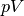
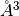
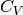
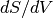
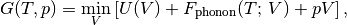
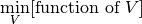

Quasi harmonic approximation¶
Usage of phonopy-qha¶
Using phonopy results of thermal properties, thermal expansion and
heat capacity at constant pressure can be calculated under the
quasi-harmonic approximation. phonopy-qha is the script to
calculate them. An example of the usage for example/Si-QHA is as
follows.
To watch selected plots:
phonopy-qha --sparse=50 -p e-v.dat thermal_properties.yaml-{-{5..1},{0..5}}

Without plots:
phonopy-qha e-v.dat thermal_properties.yaml-{-{5..1},{0..5}}
1st argument is the filename of volume-energy data (in the above
expample, e-v.dat). The volume and energy of the unit cell
(default units are in  and eV, respectively). An
example of the volume-energy file is:
and eV, respectively). An
example of the volume-energy file is:
# cell volume energy of cell other than phonon
140.030000 -42.132246
144.500000 -42.600974
149.060000 -42.949142
153.720000 -43.188162
158.470000 -43.326751
163.320000 -43.375124
168.270000 -43.339884
173.320000 -43.230619
178.470000 -43.054343
183.720000 -42.817825
189.070000 -42.527932
Lines starting with # are ignored. The other arguments are the
filenames of thermal_properties.yaml calculated at the respective
volumes given in the 1st argument. The thermal_properties.yaml at
volume points have to be calculated with the same temperature ranges
and same temperature steps. thermal_properties.yaml can be
calculated by following Thermal properties related tags, where the
physical unit of the Helmholtz free energy is kJ/mol as the default,
i.e., no need to convert the physical unit in usual cases.
Another example for Aluminum is found in the example/Al-QHA directory.
If the condition under puressure is expected, terms may be
included in the energies, or equivalent effect is applied using
--pressure option.
Options¶
-h¶
Show help. The available options are shown. Without any option, the results are saved into text files in simple data format.
--tmax¶
The maximum temperature calculated is specified. This temperature has
to be lower than the maximum temperature calculated in
thermal_properties.yaml to let at least two temperature points
fewer. The default value is --tmax=1000.
-p¶
The fitting results, volume-temperature relation, and thermal expansion coefficient are plotted on the display.
--sparse¶
This is used with -s or -p to thin out the number of plots of
the fitting results at temperatures. When --sparse=10, 1/10 is
only plotted.
-s¶
The calculated values are written into files.
--pressure¶
Pressure is specified in GPa. This corresponds to the  term described in the following section Thermal properties in (T, p) space calculated under QHA. Note that bulk modulus obtained with this option than 0 GPa is incorrect.
-b¶
Fitting volume-energy data to an EOS, and show bulk modulus (without considering phonons). This is made by:
phonopy-qha -b e-v.dat
--eos¶
EOS is chosen among vinet, birch_murnaghan, and
murnaghan. The default EOS is vinet.
phonopy-qha --eos='birch_murnaghan' -b e-v.dat
Output files¶
The physical units of V and T are  and K, respectively. The unit of eV for Helmholtz and Gibbs energies, J/K/mol for  and entropy, GPa for for bulk modulus and pressure are used.
- Bulk modulus (GPa) vs T (
bulk_modulus-temperature.*) - Gibbs free energy (eV) vs T (
gibbs-temperature.*) - Volume change with respect to the volume at 300 K vs T (
volume_expansion.*) - Heat capacity at constant pressure (J/K/mol) vs T derived by
 (
(Cp-temperature.*) - Heat capacity at constant puressure (J/K/mol) vs T by polynomial
fittings of Cv and S (
Cp-temperature_polyfit.*) - Helmholtz free energy (eV) vs volume
(
helmholtz-volume.*). When--pressureoption is specified, energy offset of is added. See also the following section (Thermal properties in (T, p) space calculated under QHA). - Volume vs T (
volume-temperature.*) - Thermal expansion coefficient vs T (
thermal_expansion.*) - Thermodynamics Grüneisen parameter (no unit) vs T (
gruneisen-temperature.dat)
Cv-volume.dat, entropy-volume.dat,
and dsdv-temperature.dat () are the data internally
used.
Thermal properties in (T, p) space calculated under QHA¶
Here the word ‘quasi-harmonic approximation’ is used for an approximation that introduces volume dependence of phonon frequencies as a part of anharmonic effect.
A part of temperature effect can be included into total energy of electronic structure through phonon (Helmholtz) free energy at constant volume. But what we want to know is thermal properties at constant pressure. We need some transformation from function of V to function of p. Gibbs free energy is defined at a constant pressure by the transformation:

where

means to find unique minimum value in the brackets by changing volume. Since volume dependencies of energies in electronic and phonon structures are different, volume giving the minimum value of the energy function in the square brackets shifts from the value calculated only from electronic structure even at 0 K. By increasing temperature, the volume dependence of phonon free energy changes, then the equilibrium volume at temperatures changes. This is considered as thermal expansion under this approximation.
phonopy-qha collects the values at volumes and transforms into the
thermal properties at constant pressure.